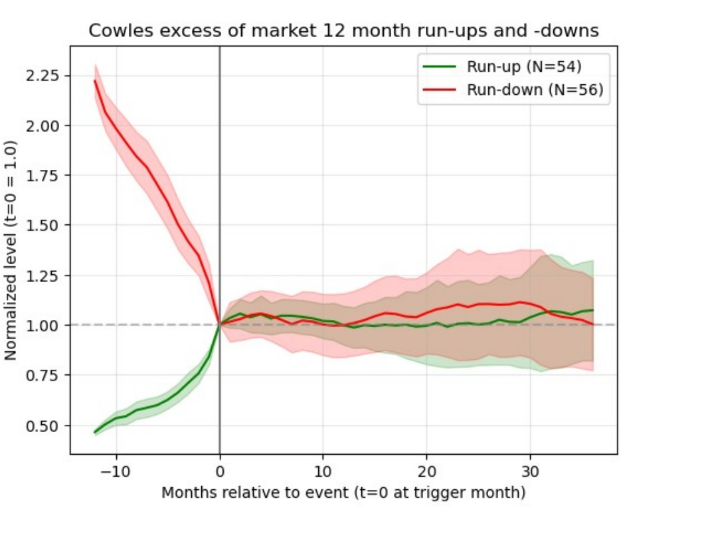
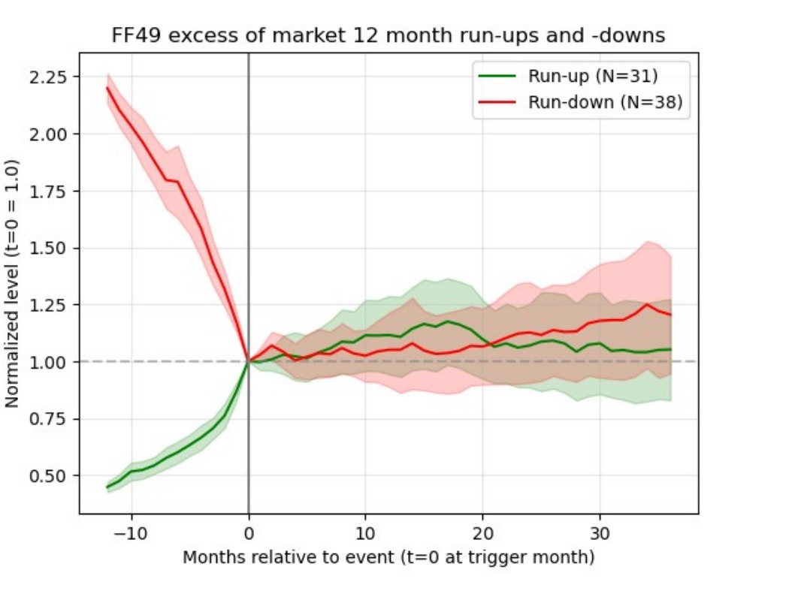

Chapter VIII
Information and the Efficiency of the Capital Markets
How information becomes embedded in prices, the three forms of market efficiency, and the evidence for and against efficient markets.
I. Arbitrage and the Price of Risk
Chapters IV and V drew the Security Market Line: in a market at rest, every security sits on that line, its expected return fixed by its beta — the price of risk. But markets are never quite at rest. News arrives, expectations diverge, and a price is knocked off the line: for a moment the security is mispriced. What pulls it back is arbitrage. Let a stock drift below the line (too dear for its risk) or above it (too cheap), and investors who notice will sell the overpriced and buy the bargain, and their trading nudges the price back. This chapter takes a deeper dive into that machinery — how mispricings arise as information arrives, and how fast, and how completely, arbitrage makes them disappear.
This search is the mechanism at work. Arbitrageurs study cash flows, discount rates, and the firm-specific factors that move a single stock — the health of a chief executive, the reception of a product, a pending lawsuit. Opportunities for this “arbitrage in expectations” are uncommon, and briefer still once found, because speed matters: once the buying begins, the price adjusts and the opportunity closes. The chapter’s central question is simply how good this mechanism is — how rapidly, and how thoroughly, do mispricings vanish?
The Invisible Hand of the Arbitrageur
Market efficiency is a statement about speed: how quickly relevant information becomes embedded in prices. The mechanism is a kind of invisible hand — an overpriced asset attracts short-sellers who push it down, an underpriced one attracts buyers who push it up. This is informational efficiency, about how fast news enters prices, not the Pareto efficiency of how resources are allocated. Two forces govern it: liquidity, since an illiquid market cannot react quickly, and psychology, since a crowd can over- or under-react when the meaning of the news is hard to judge.
Information once travelled only as fast as people did. In the eighteenth century a price change in Amsterdam reached London on the Thursday after the Monday it occurred — the time a fast messenger needed to cross the Channel. Today the same information reaches every market within seconds.
II. Regnault and the Value of a Secret
The idea that prices already reflect what is knowable is usually dated to the 1950s and 1960s. In fact it was stated and tested nearly a century earlier — and by someone who actually worked the market. Jules Regnault (1834–1894), a broker’s assistant in Second-Empire Paris, taught himself mathematics in a garret near the Bourse and in 1863 published Calcul des chances et philosophie de la bourse, arguably the first statistical theory of the stock market. He built the theory, tested it against data, and then used it to grow rich, retiring as a rentier with a fortune held, tellingly, mostly in bonds.
Regnault began with a direct question: who actually makes money in the market? For the ordinary investor, he argued, trading is a fair game at best; the only reliable profit belongs to those who know something the public does not.
“There is only one certain way of making a sure profit at the Stock Market, which is to only trade in guaranteed information unknown to the public … accessible only to a happy few, who is admitted to … those private meetings where the great political and financial decisions are plotted. This is the primary cause of the detrimental inequality which it is impossible to escape.”
— Jules Regnault, Calcul des chances (1863), §15
His example was close at hand: the French rente, the government bond whose price swung on decisions taken in ministries, where a civil servant “who takes advantage of his position and State secrets” held every advantage. Nathan Rothschild is the legend of the type — his courier network is said to have brought him word of Waterloo before London had it, letting him trade ahead of the news. Regnault’s insight, in modern terms, is that markets are efficient with respect to public information but not necessarily private: the advantage lies in what is not yet known. This reframes the question. If only private information pays, then what matters is how quickly private information ceases to be private and is reflected in the price.
Consider what happens when private information becomes public. A major corporate event — a merger, a disaster, a rate decision — instantly rewrites expected cash flows, and the price moves. The Bhopal chemical disaster collapsed Union Carbide’s stock within minutes; a Federal Reserve rate decision moves stocks the same day, not the day after. The tool for seeing this is the event study, which lines up many such events at day zero and averages the cumulative abnormal return around them.
Figure 8.1. An event study of merger targets. The line is the cumulative abnormal return of firms that received a takeover bid, averaged and aligned on the announcement day (day 0). Roughly half of the total run-up occurs before the announcement — the mark of private information reaching the market ahead of the news — and the remainder arrives at once on the day itself. Afterward the return is flat: the public news is fully absorbed, leaving no drift to trade on. After Keown and Pinkerton, “Merger Announcements and Insider Trading Activity,” Journal of Finance (1981).
The pattern is characteristic of an efficient market, with a revealing wrinkle. Part of the adjustment happens on the announcement day, and none afterward — no drift, because no public news remains to trade on. But much of the run-up comes before the announcement: private information entering the price ahead of the news, as Regnault described, until the announcement makes it public and the remaining gap closes at once. Efficiency also constrains managers: genuine news moves prices, but cosmetic accounting does not, and a figure buried in a footnote will not fool the market.
Three Degrees of Efficiency
How much information is already in the price? The answer is not all-or-nothing, and the standard taxonomy names three nested degrees.
Figure 8.2. The three forms of market efficiency. Each form subsumes the one inside it: strong-form implies semi-strong, which implies weak-form efficiency.
Strong-form efficiency holds that all information, even private, is already in the price — a demanding benchmark few accept. Semi-strong-form holds that all public information is reflected: annual reports, news, analyst opinion. Most believe the U.S. equity market is close to this, though the definition frays at the edges — is a document public the instant it is posted online? Weak-form efficiency, the mildest claim, holds only that past prices cannot be used to earn excess profits. Each form contains the ones below it: past prices are themselves public, so strong implies semi-strong implies weak.
Key Concept: Three Forms of the EMH
Weak form: past prices cannot predict future returns. Semi-strong form: all public information is reflected in prices. Strong form: even private information is reflected. Each form implies all the weaker forms below it. Regnault’s “value is determined by the price itself” is weak-form efficiency; his “only a secret pays” is the claim that the market is not strong-form efficient.
III. The Random Walk
Regnault’s second great idea followed from his first. If the crowd’s trading has already squeezed all public information into the price, then only new information can move it — and new information, by definition, is unpredictable. At any instant, he reasoned, a price is as likely to rise as to fall, a coin toss, because if the odds tilted, arbitrage (his word) would level them. Successive changes are therefore independent: the past holds no usable signal about the future. The shape this implies for prices over time is a random walk. He illustrated it with a simple analogy for the wisdom of the crowd.
From independence Regnault drew a sharp, testable prediction. If each interval adds its own independent jostle to the price, the spread of prices around their starting point must widen — not in proportion to time, but to its square root, because it is variances, not deviations, that add up. In his own capitals: the deviation of prices is in direct relation to the square root of time. It is the signature of the random walk — the same √time law Louis Bachelier would rediscover in 1900 and physicists would attach to Brownian motion.
Then Regnault did what almost no one in his century thought to do with a market: he checked the prediction against data. Using monthly prices of the French 3% rente from 1825 to 1862, he measured the typical price deviation over a month and over a year — and found them in almost exactly the √time ratio the theory demanded.
Figure 8.3. Regnault’s square-root-of-time law. If price changes are independent, the typical deviation of the price from its starting point grows as $\sqrt{\text{time}}$. Regnault’s two measured deviations of the 3% rente — about 2.73 over a month and 9.50 over a year — fall almost exactly on the curve $2.73\sqrt{\text{months}}$: the law predicts $2.73\times\sqrt{12} = 9.46$, against his observed 9.50. Slide the horizon to read the predicted deviation. After W. N. Goetzmann, “Pre-history of Efficient Market Theory,” from Regnault (1863).
“Is there,” Regnault asked, “a better example of the harmony of theory and experience?” The fit is the first empirical confirmation of the random walk — the founding test of the efficient-market hypothesis, run ninety years before the phrase existed.
Regnault also drew a sobering corollary. The fair game is fair only before costs. Each trade pays a brokerage fee, so the expected profit of a round trip, zero before costs, is negative after them. Because the speculator’s edge grows only as √time while the fees accumulate trade by trade, frequent short-term trading tends steadily toward loss — Regnault estimated that a heavy speculator would be wiped out, on average, within about forty trades. Patient long-term investment, he concluded, is a fundamentally different activity from short-term speculation — a distinction the fund scorecard at the end of this chapter will confirm.
Like Bachelier after him, Regnault was forgotten for the better part of a century. He deserves to be remembered as the first to state the efficient-market idea clearly, test it against data, and follow it to its unsettling conclusions.
Fama’s Regressions and the Modern Case
Regnault’s √time law was the first confirmation; the modern case for efficiency was built on regressions. In the 1960s Eugene Fama and others ran the test Regnault could not, correlating each day’s return with the returns before it across thousands of stocks. The serial correlation came back indistinguishable from zero: the past, statistically, said nothing about the future. It was weak-form efficiency again — now with a mountain of data behind it.
The most telling evidence comes from the events that appear to refute efficiency: bubbles. If any pattern should be exploitable, it is the industry that has just doubled or just halved. Robin Greenwood, Andrei Shleifer, and Yang You examined exactly this in modern U.S. data, tracking what becomes of an industry after a sharp run-up or run-down. In later work, using a database of industry returns reaching back to the nineteenth century, we tested their finding out of sample — on a century of earlier history the original data could not reach.


Figure 8.4. Booms and crashes converge — in two eras. Industries with the largest twelve-month run-ups and run-downs, tracked from before the event (t = 0) to three years after, in returns measured net of the market. Before the event the two groups are far apart; after it, both settle at essentially the market’s return, their confidence bands overlapping. Right: modern Fama–French industries (1926–2024), reproducing the result of Greenwood, Shleifer, and You. Left: Cowles industries reaching back to 1870 — an out-of-sample test of that result on earlier history (Goetzmann and coauthors, “Bubbles, Booms & Crashes”). The pattern holds in both.
The result is the same in both panels. Measured net of the market, industries that had just soared and industries that had just crashed — opposite recent histories — went on to earn essentially the market’s return, along nearly the same path. The divergence is all in the past; there is no excess return to come, either way. This is the sixth of our master pictures: two paths far apart before the event, together after it. The market had already priced whatever the boom or crash would mean, leaving nothing on the table for the investor who arrived late. That the modern result (right panel) reappears in the earlier data (left) makes the case stronger — it is not an artifact of a single period.
Testing the Three Forms
Merger announcements are a natural experiment on strong-form efficiency. Insiders — lawyers, bankers, managers — often know before the public, and prices frequently drift up before an official announcement, a sign that private information does leak into the price (and that some of the trading behind it is illegal). But the large jump on the announcement day shows the leakage is incomplete: the market is not fully strong-form efficient, exactly Regnault’s point about the value of a secret.
For semi-strong efficiency, the record is a good first approximation with nagging exceptions. Money managers pore over public information yet, as a group, show no consistent risk-adjusted edge. Backtests do turn up apparent anomalies — the “Dogs of the Dow,” post-earnings-announcement drift — but trading costs and thin liquidity tend to eat the paper profits, and few investors sustain them.
For weak-form efficiency, the news is subtler than the early researchers hoped. There is faint short-run momentum (days), reversals at a few weeks, and slow mean-reversion over years — Fama and French found four-year returns drifting back toward their long-run means. But the cycles are so long, and the statistics so noisy, that trading them profitably is another matter. Charles Henry Dow was chasing the same long swings a century ago; today’s hedge funds chase them with neural networks. If it truly worked, one wonders, why would they sell you the software?
The verdict on patterns is the one Regnault would have predicted: for widely traded securities, prices are close to a random walk, and if they were not, arbitrageurs would quickly make them so — buying the underpriced, shorting the overpriced, until the pattern is gone.
The Scorecard: Active versus Passive
There is a blunter test of efficiency than any regression: the track record of the professionals paid to beat the market. If prices were riddled with exploitable patterns, skilled managers would harvest them, and active funds would routinely outrun a simple index. They do not. The standard scorecard — S&P’s SPIVA study, which measures active funds against their benchmarks — is stark and stubborn.
Figure 8.5. The active-versus-passive scorecard. The share of actively managed U.S. large-cap funds that failed to beat the S&P 500, by horizon. Over a single year most already trail the index; over twenty years more than nine in ten do. The longer the horizon, the more decisively simple indexing wins — the practical face of market efficiency. Figures approximate, from S&P’s SPIVA U.S. scorecard (year-end); the study is refreshed twice a year.
Over a single year, roughly six in ten active large-cap funds trail the S&P 500; stretch the horizon to twenty years and the figure climbs above ninety percent. This is Regnault’s corollary at industrial scale, and it has a name — William Sharpe’s “arithmetic of active management.” Since all investors together are the market, the average actively managed dollar must earn the market return before costs, and therefore must fall short of it after fees. Beating the index is not merely hard; on average, and net of costs, it is arithmetically impossible. For most investors the rational move is to stop trying and simply buy the market.
And the competition is only intensifying. The collective wisdom a price aggregates once came from human analysts alone; today it includes algorithms and machine-learning models trading in microseconds — artificial intelligence as well as human. To beat the market now is to out-think not just the crowd on the steps of the Bourse but the machines behind them. The efficient-market hypothesis is, in the end, a statement of humility: the price already knows more than you do.
IV. A Hidden Ancestor: Regnault and the Arbitrage Pricing Theory
There is a final irony worth pausing on. The Arbitrage Pricing Theory of Chapter VI — Stephen Ross’s elegant alternative to the CAPM — rests on nothing more than the refusal to leave a free lunch on the table: if two portfolios carried the same risk but sold at different prices, arbitrageurs would trade the gap away, so in equilibrium the gap cannot exist. From that single, simple motive Ross built a pricing theory flexible enough to admit many sources of systematic risk, and free of the CAPM’s heavy machinery — the utility curves, the assumptions about aggregate holdings and identical beliefs. At its core it is Regnault’s idea: speculators seek out information and act on it quickly, and prices are pulled into line.
Ross, of course, had never heard of Regnault, who by 1976 had been forgotten for a century. The insight that so naturally underpins the modern theory of arbitrage was not, in fact, its foundation. It is the same irony as Bachelier and Black–Scholes: a nineteenth-century figure reaching a result that the twentieth century would rediscover independently, and build upon, without ever knowing he had come first.
V. Conclusion
Efficient-market theory is a strong approximation for liquid, well-regulated markets. How quickly does information get incorporated into prices? In a word, quickly — because arbitrageurs are ceaselessly collecting, processing, and trading on it. And efficiency is a public good: it keeps prices anchored to economic value, lowers the cost of judging what a security is worth, and lets ordinary investors trade with confidence. The speculator hunting a profit is, without meaning to be, a servant of that efficiency.
Key Concept: The Efficient Markets Hypothesis
In liquid, well-regulated markets with many informed participants, prices rapidly reflect available information. Markets are not perfectly efficient, but U.S. equity markets are efficient enough that consistently beating them after costs is extremely difficult. The EMH is a useful working assumption, not an exact description of reality — first glimpsed by Regnault on the floor of the Paris Bourse, and confirmed, a century and a half later, by the fund scorecard.